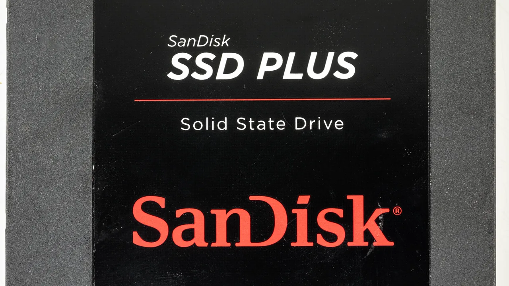

샌디스크 SNDK를 보는 주주들이 지금 가장 궁금해할 지점은 단순합니다. AI 데이터센터가 NAND와 기업용 SSD를 많이 사는 것은 알겠는데, 이 이익률이 얼마나 오래갈 수 있느냐는 문제입니다. 2026년 4월 30일 발표된 샌디스크 회계 3분기 실적은 숫자만 보면 놀랍습니다. 매출은 59억5천만달러로 직전 분기보다 97% 늘었고, 데이터센터 매출은 233% 증가했습니다. GAAP 매출총이익률은 78.4%, GAAP 순이익은 36억1천5백만달러였습니다. 비메모리 기업처럼 보일 정도의 마진이지만, 핵심은 이것이 새 기준선인지, 아니면 가격 사이클이 만든 강한 봉우리인지 구분하는 일입니다.
샌디스크는 웨스턴디지털에서 분리된 뒤 독립 상장사로 다시 평가받고 있습니다. 예전에는 하드디스크와 NAND 사업이 섞인 회사 안에서 한 사업부처럼 보였지만, 이제는 투자자가 NAND 가격, 기업용 SSD 믹스, Kioxia와의 생산 합작, 고객 계약 구조를 직접 따져야 하는 순수 저장장치 회사에 가깝습니다. 그래서 주가가 강하게 움직일수록 “AI 수요가 좋다”는 한 문장보다 “누가, 어떤 조건으로, 몇 년 동안, 얼마만큼의 비용 부담을 지고 사는가”를 봐야 합니다.
특히 이번 사이클은 예전 PC·스마트폰 저장장치 회복과 성격이 다릅니다. 클라우드 고객은 AI 학습과 추론을 위해 대용량 저장장치, 고성능 기업용 SSD, 전력 효율이 좋은 QLC 기반 제품을 찾습니다. 수요는 분명히 좋아졌습니다. 다만 NAND는 여전히 공급 증설과 가격 하락이 반복되는 산업입니다. 샌디스크 주주에게 필요한 질문은 “AI가 NAND를 더 쓰는가”가 아니라 “가격이 높은 시점에 맺은 고객 계약이 다음 하락기에도 매출총이익률을 지켜주는가”입니다.
지금 숫자는 가격 사이클과 고객 믹스가 함께 만든 힘입니다

샌디스크의 회계 3분기 실적에서 가장 강한 신호는 데이터센터입니다. 회사는 매출 호조가 고부가 고객으로의 믹스 전환과 가격 상승에서 나왔다고 설명했습니다. 여기서 중요한 단어는 “수요”보다 “믹스”입니다. 같은 NAND라도 소비자용 메모리카드, PC용 SSD, 기업용 SSD, 클라우드 데이터센터용 고용량 제품은 가격과 마진이 다릅니다. 데이터센터 비중이 커질수록 이익률은 좋아질 수 있지만, 그 고객들이 재고를 얼마나 쌓아 두고 있는지, 가격 조건이 얼마나 고정되어 있는지에 따라 다음 분기 숫자는 전혀 다르게 보일 수 있습니다.
투자자는 매출총이익률 78.4%라는 숫자를 그냥 새 정상으로 놓고 계산하면 위험합니다. 메모리 산업은 가격이 오를 때 이익률이 폭발적으로 좋아지고, 가격이 내려갈 때는 재고 평가와 고정비 부담이 같이 압박합니다. 지금의 높은 마진은 샌디스크가 데이터센터와 고부가 제품으로 잘 이동했다는 증거이면서, 동시에 NAND 가격이 어느 정도까지 버틸 수 있는지를 시험하는 숫자입니다.
회사는 회계 4분기 매출 가이던스를 77억5천만달러에서 82억5천만달러로 제시했습니다. 비메모리 성장주라면 이 숫자만으로도 분위기가 충분히 설명됩니다. 하지만 샌디스크는 생산능력, 웨이퍼 구매, 고객 약정, 가격 사이클이 맞물리는 회사입니다. 다음 실적에서 확인할 것은 매출 상단 달성 여부만이 아닙니다. 높은 가격으로 출하된 물량이 반복 고객 계약에서 나왔는지, 단기 재고 확보 주문이었는지, 클라우드 고객의 구매가 다음 분기에도 이어지는지가 더 중요합니다.
마이크론, SK하이닉스, 삼성전자와 비교할 때 샌디스크의 차이는 DRAM이 아니라 NAND에 훨씬 더 직접 노출되어 있다는 점입니다. HBM이 주도하는 AI 메모리 사이클과 기업용 SSD 사이클은 서로 연결되어 있지만 완전히 같지 않습니다. GPU 서버가 늘어도 저장장치 구매가 특정 분기에 몰릴 수 있고, 고객이 재고를 많이 쌓으면 다음 분기 주문이 쉬어갈 수 있습니다. 그래서 샌디스크의 이익률을 볼 때는 AI 키워드보다 NAND 가격표와 고객 주문의 질을 먼저 봐야 합니다.
신사업 모델 계약은 단가보다 지속성이 중요합니다
관련 영상
샌디스크 SNDK와 NAND 슈퍼사이클을 설명하는 한국어 롱폼 영상
샌디스크가 강조한 부분 중 하나는 신사업 모델 계약입니다. 회사는 회계 3분기 말에 세 개의 신사업 모델 계약을 체결했고, 회계 4분기에도 두 개를 추가로 체결했다고 밝혔습니다. 경영진 표현을 그대로 풀어보면, 단순한 현물 판매보다 여러 해에 걸친 고객 참여와 확정적인 재무 약정이 붙은 계약 구조를 늘리겠다는 뜻입니다. 이 방향은 NAND 회사에게 매우 중요합니다. 매 분기 가격 협상만으로 제품을 파는 구조보다 고객의 장기 사용 계획 안에 들어갈수록 이익 변동성이 줄어들 수 있기 때문입니다.
다만 계약이라는 말이 언제나 안전판을 의미하지는 않습니다. 투자자가 봐야 할 것은 계약 숫자가 아니라 계약의 성격입니다. 고객이 물량을 얼마나 확정했는지, 가격이 어떤 방식으로 조정되는지, 선급금이나 취소 불가능 약정이 있는지, 제품 세대 전환 때 다시 협상해야 하는지에 따라 가치가 달라집니다. 샌디스크 주주에게는 “NBM 계약이 몇 개 늘었다”보다 “그 계약이 NAND 가격 하락기에 얼마나 마진을 지켜주는가”가 더 실질적인 질문입니다.
AI 데이터센터 고객은 저장장치를 단순 소모품처럼 사지 않습니다. 모델 학습 데이터, 추론 로그, 검색·추천 데이터, 장기 보관 데이터가 계속 늘어나면 저장장치 설계도 서버 아키텍처의 일부가 됩니다. 샌디스크가 UltraQLC와 기업용 SSD에서 고객 인증을 넓힐 수 있다면, 단기 가격 상승보다 훨씬 더 좋은 이야기가 됩니다. 제품이 고객 인프라 안에 깊게 들어가면 교체 비용과 검증 시간이 장벽이 되기 때문입니다.
그래서 다음 분기부터는 데이터센터 매출 증가율만 보면 부족합니다. 신사업 모델 계약이 실제 매출로 얼마나 전환되는지, 신규 고객인지 기존 고객의 추가 약정인지, 제품군이 소비자용 저장장치보다 기업용 SSD 쪽으로 얼마나 더 기울어지는지 확인해야 합니다. 샌디스크가 지금처럼 높은 마진을 오래 유지하려면 가격보다 계약의 질이 먼저 좋아져야 합니다.
Kioxia 합작은 생산 우위이자 병목입니다
샌디스크의 생산 구조를 이해하려면 Kioxia와의 Flash Ventures를 봐야 합니다. SEC 10-Q에 따르면 회사는 플래시 기반 메모리 웨이퍼의 대부분을 Kioxia와의 사업 벤처에서 조달합니다. 이 구조는 장점이 분명합니다. 일본 내 대형 NAND 생산 기반을 함께 쓰기 때문에 기술 전환과 생산 규모에서 단독 투자보다 효율을 얻을 수 있습니다. 샌디스크가 순수 NAND 회사로 평가받을 수 있는 배경도 이 생산 기반에서 나옵니다.
하지만 합작 생산은 마음대로 공급을 늘릴 수 없다는 뜻이기도 합니다. 회사는 Flash Ventures의 생산량 중 대체로 절반에 해당하는 몫을 가져가며, 장비 투자와 웨이퍼 구매, 고정비 부담이 계약 구조 안에서 움직입니다. 주문이 좋아질 때는 안정적인 생산 기반이 장점이지만, 고객 수요가 갑자기 더 커질 때는 증설 속도가 병목이 될 수 있습니다. 반대로 수요가 둔화되면 고정비와 구매 약정이 부담으로 바뀔 수 있습니다.
샌디스크가 진짜 강해지는 길은 단순히 웨이퍼를 많이 확보하는 것이 아닙니다. 더 높은 비트 밀도, 더 낮은 원가, 더 좋은 전력 효율, 더 안정적인 기업용 SSD 품질을 고객 인증으로 연결해야 합니다. UltraQLC 같은 제품이 의미 있는 이유도 여기에 있습니다. QLC는 비용 효율이 좋지만 고객 입장에서는 내구성, 성능, 펌웨어 안정성, 데이터센터 운영 조건을 모두 확인해야 합니다. 인증을 통과해 실제 양산 물량으로 이어질 때만 매출과 마진에 힘이 붙습니다.
이 대목에서 삼성전자와 SK하이닉스, 마이크론도 함께 봐야 합니다. NAND 가격이 좋아지면 모두가 공급을 늘리고 싶은 유인이 생깁니다. 샌디스크가 고부가 고객 계약으로 한 발 앞서가더라도 경쟁사 증설과 가격 정책이 바뀌면 마진은 흔들릴 수 있습니다. 따라서 샌디스크의 투자 포인트는 “NAND가 부족하다”에서 끝나면 약합니다. “Kioxia 합작 생산의 원가와 제품 전환 속도가 경쟁사보다 얼마나 오래 우위인가”까지 봐야 합니다.
무차입과 자사주는 다음 하락기의 방어선입니다
이번 실적에서 또 하나 눈에 띄는 부분은 재무 구조입니다. 샌디스크 경영진은 무차입 재무상태, 강한 현금 창출, 최근 승인된 자사주 매입 프로그램을 함께 언급했습니다. 메모리 회사에서 무차입은 단순히 예쁜 재무제표가 아닙니다. 다음 가격 하락기에도 설비투자와 연구개발을 버틸 수 있는 체력입니다. NAND 가격이 좋을 때 현금을 얼마나 쌓고, 그 돈을 어느 정도까지 주주환원과 기술투자에 나누어 쓰는지가 사이클 기업의 실력을 가릅니다.
자사주 매입도 같은 방식으로 봐야 합니다. 주가가 낮을 때 현금으로 자기 주식을 사면 주당 가치가 좋아질 수 있습니다. 하지만 주가가 이미 큰 폭으로 오른 뒤라면 자사주 매입은 신중해야 합니다. 메모리 산업은 호황기에 미래 이익이 가장 커 보이고, 그때 밸류에이션 착시가 자주 생깁니다. 샌디스크가 자사주를 얼마나 빠르게 집행하는지보다 중요한 것은 가격 사이클이 꺾였을 때도 재무 안정성을 지킬 만큼 현금을 남겨두는지입니다.
투자자는 앞으로 세 줄을 반복해서 확인하면 됩니다. 첫째, 매출총이익률이 70%대 후반에서 얼마나 천천히 내려오는지입니다. 둘째, 신사업 모델 계약이 실제 출하와 현금흐름으로 전환되는 속도입니다. 셋째, Kioxia 합작과 제품 전환이 재고 부담 없이 진행되는지입니다. 이 세 가지가 맞으면 샌디스크는 단순 NAND 가격 상승주가 아니라 AI 데이터센터 저장장치의 핵심 공급사로 더 높은 평가를 받을 수 있습니다.
반대로 조심해야 할 장면도 분명합니다. 고객이 이미 재고를 충분히 쌓아 다음 분기 주문을 늦추거나, 경쟁사 공급이 예상보다 빨리 늘거나, 장기 계약의 가격 조정 조건이 시장보다 불리하게 바뀌면 높은 이익률은 빠르게 낮아질 수 있습니다. 샌디스크는 지금 아주 좋은 숫자를 보여주고 있습니다. 그래서 오히려 판단 기준은 더 엄격해야 합니다. 좋은 회사인지보다 먼저 좋은 숫자가 반복될 수 있는 구조인지 확인해야 합니다.
정리하면 샌디스크는 AI 저장장치 수요의 수혜를 가장 직접적으로 받을 수 있는 NAND 순수 노출 기업 중 하나입니다. 다만 주주는 AI 키워드보다 NAND 가격, 데이터센터 고객 계약, Flash Ventures 생산 구조, 현금흐름과 자사주 매입의 균형을 같이 봐야 합니다. 다음 실적에서 매출 가이던스 상단보다 더 중요한 것은 고객 약정의 질과 매출총이익률의 방어력입니다. 그 두 숫자가 버티면 SNDK의 이야기는 단기 급등주가 아니라 구조가 바뀐 저장장치 회사로 이어질 수 있습니다.